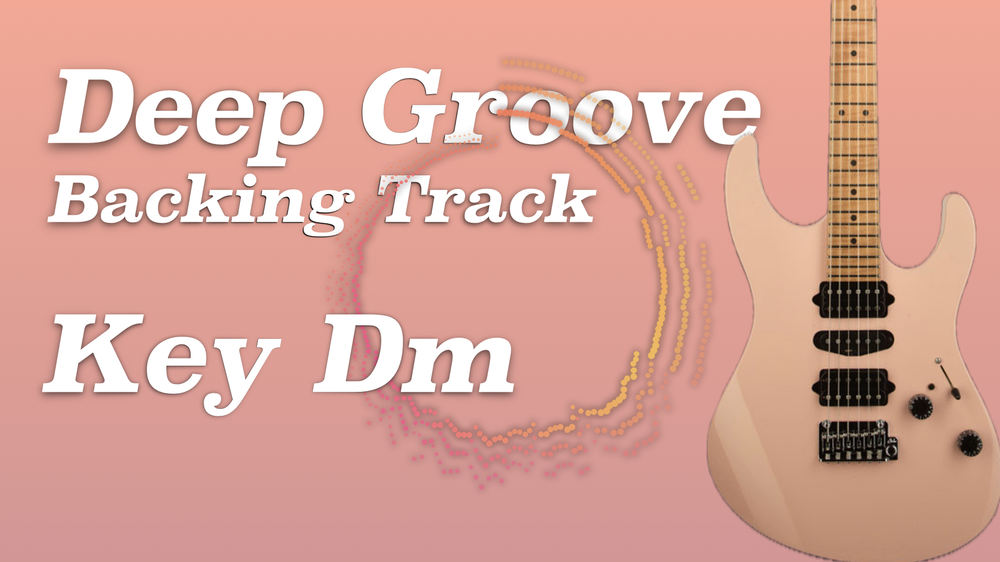

Backing tracks · Fretboard tools · Song analysis
Tracks Hub
Capture the Feeling. Compose the Meaning.
Original practice tracks and focused tools for musicians who want to listen, understand harmony, map the fretboard, and create with purpose.
- 14
- Original tracks
- 24
- Major and minor keys
- 6
- Creative tools
Start here
Choose your next step
Practice
Backing Tracks
Browse tracks by key, then sort newest or oldest first.
Reference
Chord Dictionary
Compare formulas, notes, root strings, and compact guitar
shapes.
Visualize
Scale Explorer
Map scales across 15- or 22-fret necks and download a labeled
PNG.
Analyze
Key Finder
Upload audio or paste a YouTube link to inspect the likely
tonal center.
Create
Chord Progressions
Choose a key and explore common progressions for
writing.
Train
Fretboard Trainer
Answer random string-and-fret questions to build note-name
fluency.
Featured practice audio
W15 Deep Groove Backing Track in Dm
The newest release: a darker D minor groove for pocket-focused phrasing, melodic tension, and late-night lead ideas.
Recent work
Latest Releases
About Jam Tracks Hub
Designed by a guitarist for musicians who learn by listening.
Jam Tracks Hub is designed and built by Jasper, a guitarist and music creator who turns weekly backing tracks into a focused workspace for practice, harmony, and songwriting ideas.
Every page is shaped around real musician workflows: finding a key, mapping a scale, comparing chord colors, locating notes on the fretboard, and bringing the idea back to the instrument.
The design goal is calm, practical, and musical: less menu hunting, more immediate sound, clear theory, and visual cues that support your ear without getting in the way.
Connect
Questions, collaborations, or track requests?
Send a note anytime. I usually use these messages to plan new backing tracks, workflow improvements, and guitar-focused tools.
Jamtrackshubwork@gmail.com